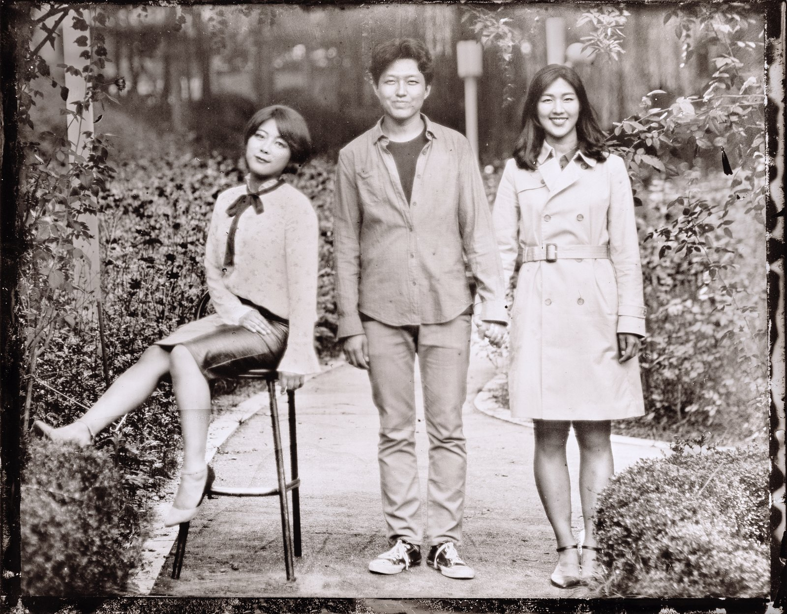
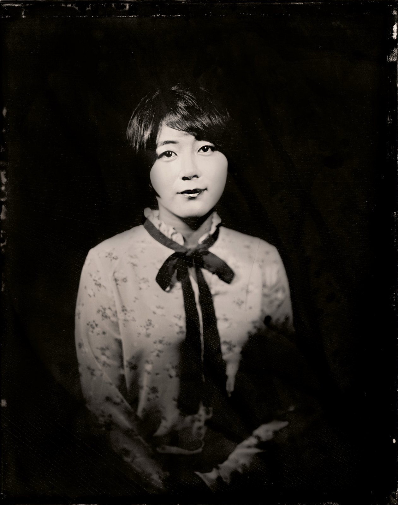
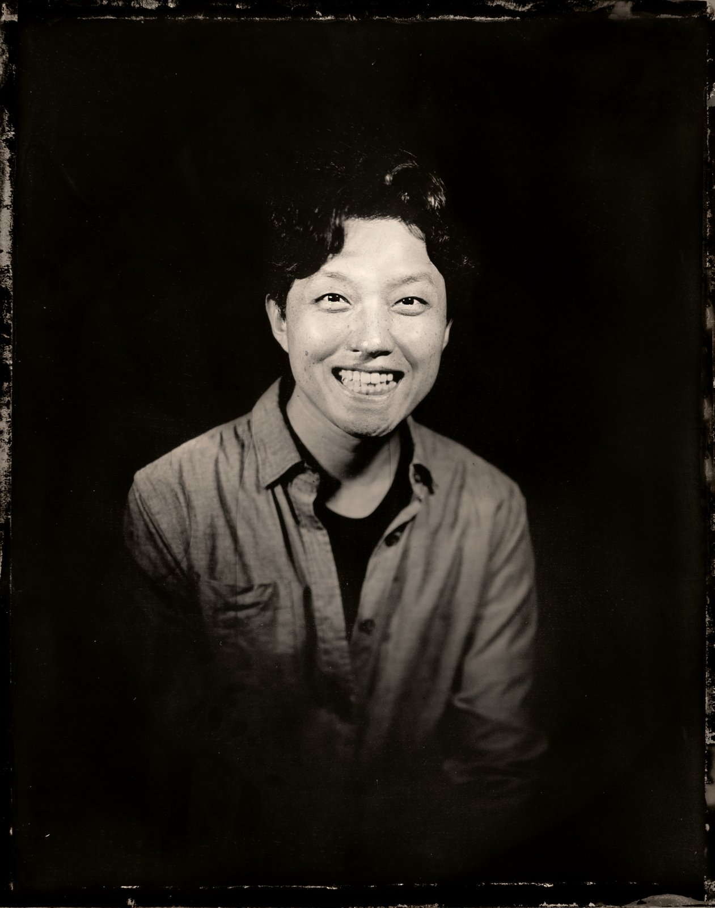
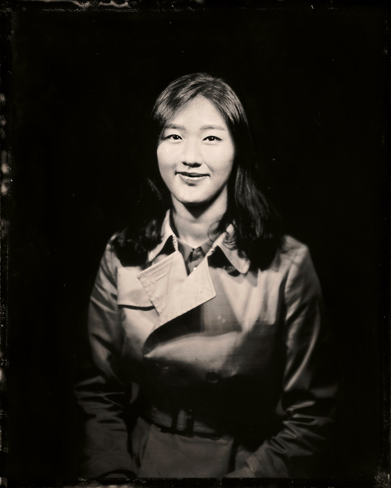
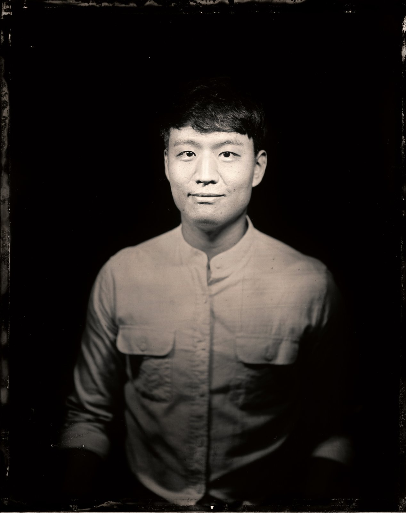

Salon Project IV
낭만씨어터 오리지널 음악극 · an original music-theatre piece
2017년 가을 · 서울청년예술단 선정작 〈살롱프로젝트〉 네 번째 작품 · 서울 곳곳의 작은 공간에서 · Autumn 2017 · the fourth work in the Salon Project, presented as a Seoul Youth Arts Group · intimate venues across the city
〈Almost a Love Story〉는 낭만씨어터가 만든 음악극이다. 낯선 도시에서 만난 두 사람이 사랑을 키우지만 어긋난 시간 속에서 헤어지고, 십 년의 세월을 돌아 다시 마주하기까지 — 청춘의 꿈과 사랑, 이별과 재회를 가을의 정서로 그렸다.
2017년 낭만씨어터는 서울청년예술단으로 선정되어, 서울시 25개 자치구를 도는 순회 기획 〈살롱프로젝트〉(전 4편)를 선보였다. 〈Almost a Love Story〉는 그 네 번째 작품이다. 화려한 무대장치 없이 피아노 한 대의 반주와 배우들의 노래, 객석과의 가까운 거리로 채운 무대로, 그해 가을 서울 곳곳의 작은 공간을 돌며 관객을 만났다.
Almost a Love Story is a music-theatre piece created by Nangman Theatre. Two people meet in an unfamiliar city and fall in love, only to be separated by mistimed circumstance — and to find their way back to each other a decade later. It traces the dreams, love, parting, and reunion of youth in an autumnal key.
In 2017 Nangman Theatre was selected as a Seoul Youth Arts Group and presented the Salon Project — a four-part series conceived as a touring programme across Seoul's 25 districts. Almost a Love Story was the fourth of these works. Staged without elaborate scenery, it is carried by a single piano, the performers' voices, and the closeness of a small room.
공연 일정 · Tour schedule
출연 배우들과 피아니스트를, 은판에 직접 인화하는 옛 사진 기법으로 담은 인물 사진. 한 장 한 장 금속판 위에 상이 맺힌다.
The performers and the pianist, captured with an antique silver-plate photographic process — each image developed directly onto a metal plate.




공연 장면 · In performance
커튼콜 · Curtain call
출연진 · The company